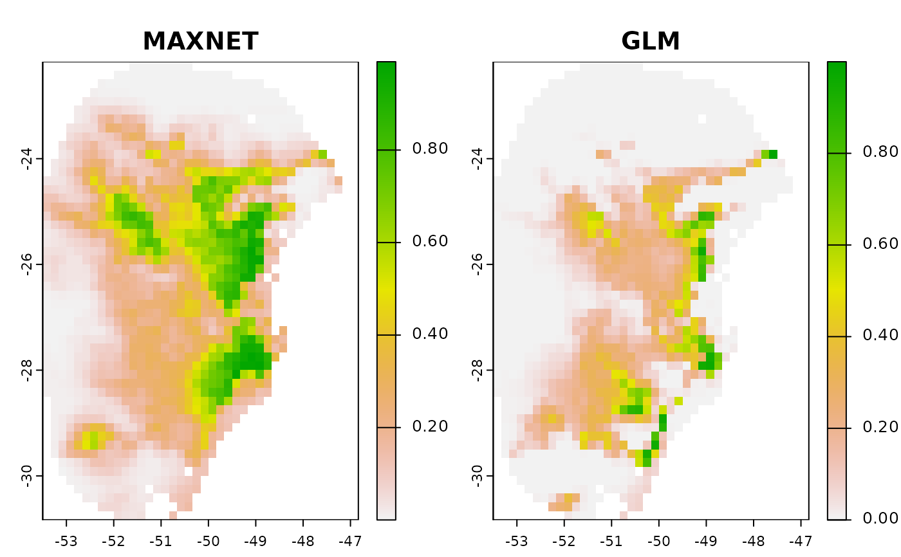

Predict selected models for a single scenario
predict_selected.RdThis function predicts selected models for a single set of new data
using either maxnet or glm It provides options to save the
output and compute consensus results (mean, median, etc.) across
replicates and models.
Usage
predict_selected(models, raster_variables, mask = NULL, write_files = FALSE,
write_replicates = FALSE, out_dir = NULL,
consensus_per_model = TRUE, consensus_general = TRUE,
consensus = c("median", "range", "mean", "stdev"),
clamping = FALSE, var_to_clamp = NULL, type = "cloglog",
overwrite = FALSE, progress_bar = TRUE)Arguments
- models
an object of class
fitted_modelsreturned by thefit_selected() function.- raster_variables
a SpatRaster or data.frame of predictor variables. The names of these variables must match those used to calibrate the models or those used to run PCA if
do_pca = TRUEin theprepare_data() function.- mask
(SpatRaster, SpatVector, or SpatExtent) spatial object used to mask the variables before predict. Default is NULL.
- write_files
(logical) whether to save the predictions (SpatRasters) to disk. Default is FALSE.
- write_replicates
(logical) whether to save the predictions for each replicate to disk. Only applicable if
write_filesis TRUE. Default is FALSE.- out_dir
(character) directory path where predictions will be saved. Only relevant if
write_files = TRUE.- consensus_per_model
(logical) whether to compute consensus (mean, median, etc.) for each model across its replicates. Default is TRUE.
- consensus_general
(logical) whether to compute a general consensus across all models. Default is TRUE.
- consensus
(character) vector specifying the types of consensus to calculate across replicates and models. Available options are
"median","range","mean", and"stdev"(standard deviation). Default isc("median", "range", "mean", "stdev").- clamping
(logical) whether to restrict variable values to the range of the calibration data to avoid extrapolation. Default is FALSE (free extrapolation).
- var_to_clamp
(character) vector specifying which variables to clamp. Only applicable if
clamping = TRUE. Default isNULL, meaning all variables will be clamped.- type
(character) the format of prediction values. For
maxnetmodels, available options are"raw","cumulative","logistic", and"cloglog", with the default being"cloglog"for maxnet and"response"for glm.- overwrite
(logical) whether to overwrite SpatRasters if they already exist. Only applicable if
write_files = TRUE. Default is FALSE.- progress_bar
(logical) whether to display a progress bar during processing. Default is TRUE.
Value
A list containing SpatRaster predictions for each replicate, along with the consensus results for each model and the overall general consensus.
Examples
# Import variables to predict on
var <- terra::rast(system.file("extdata", "Current_variables.tif",
package = "kuenm2"))
# Example with maxnet
# Import example of fitted_models (output of fit_selected())
data("fitted_model_maxnet", package = "kuenm2")
# Predict to single scenario
p <- predict_selected(models = fitted_model_maxnet, raster_variables = var)
#>
|
| | 0%
|
|=================================== | 50%
|
|======================================================================| 100%
# Example with GLMs
# Import example of fitted_models (output of fit_selected())
data("fitted_model_glm", package = "kuenm2")
# Predict to single scenario
p_glm <- predict_selected(models = fitted_model_glm, raster_variables = var)
#>
|
| | 0%
|
|======================================================================| 100%
# Plot predictions
terra::plot(c(p$General_consensus$median, p_glm$General_consensus$median),
col = rev(terrain.colors(240)), main = c("MAXNET", "GLM"),
zlim = c(0, 1))
